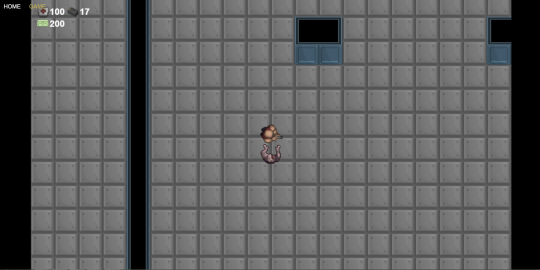
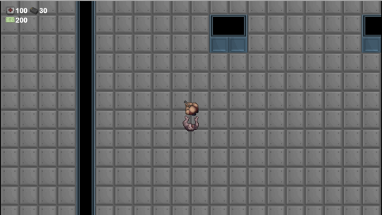
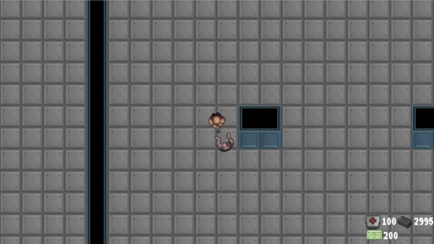
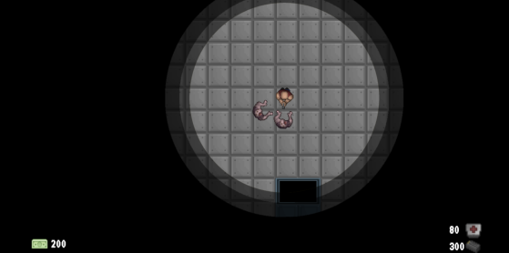

Development Log Information
So after getting the basic functionality of the game implemented such as player movement, player input, setting up a level and creating groups, which all of these features are relatively basic in Phaser and by completing the introductory tutorial you can see how these features are implemented. I decided it would be a good idea to keep a log of my development processes as I start to include the more advanced features of the game. The following logs describe what I done to implement each feature and my thought process to complete these features, I will also be including screen captures where I can to show the gradual process of the games development visually.
Getting the Right GUI
Today on my game I started to implement the game’s GUI, I already knew from designing my game before I started coding and as the game is heavy inspired by CoD Zombies and Killing Floor. I knew the only information I needed to display constantly (I will be adding more GUI stuff in the future) was the players health, the amount of ammo left and how much money the player has. The first image below shows the first version of the GUI I created, I wanted to go for a very minimal look both because there is not a lot of information to display but mostly because I prefer a very minimal look.
After I created the first version I asked some people for feedback and they liked the look of it but someone said they would prefer it slightly bigger, so I doubled the size of it here.
Once that change was made I just looked at it for a couple minutes a discussed it with a friend I decided to move it down to the bottom of the screen and try that, I also decided to move it to the right as I personally feel that is the best position for it.
Again once that was done I got some more feedback, some people I asked had no preference they liked it in either position but a couple people liked it at the bottom right so I kept it there. A “pixel” style font was also used for the text to help it fit better with the theme and look of the game (the font may be a bit hard to see).
Animation Callback
So after getting the zombie movement and damage code implemented I started to work on playing the animations for each of these actions, the movement animation was easy to do as expected just play the animation when the zombie is moving and continually loop when the zombie is moving. The death animation however is a little different, instead of looping the animation I want to kill the zombie at the end of the death animation. To do this I wanted to call a function at the end of the death animation, I then looked up the documentation on Phaser and found you can do on animation complete callback which fits the bill perfectly. However I did not realise if the loop for the animation was set to true (I know copy and paste is bad) you end up with this:

Which is cause by the function never running as the animation never ends, after about 10 minutes of head scratching I realised this and set the loop to false and I ended up with this:

Melee Combat
Once the death and movement animations were added to the game I started to work on the melee combat and animation for the zombies. I have never done melee combat in a game before so this was something completely new, so I broke it down into stage of how I wanted it to work and looking at melee in other games. The game I used as my example was Call of Duty zombies as it was a big influence on my game, so I went and played a round and broke down how the zombies act when the hit the player. When the player is close enough the zombie swings at the player however if the player backs up during the swing it does not count as a collision, the collision is only true if the zombie model hits the player model (or close enough to hit the player).

For the zombie movement I have the zombies stop when they are right beside the player, so inside the check that stops the zombie from moving anymore if it is beside the player I added in code to instead start the attack animation (I also added in a timer to delay the attacks). Once the attack animation reached its final frame I added in a similar check to make sure the zombie was next to the player, but this time I allowed the zombie to be 10 pixels further away to simulate the reach or swing of its arm.

Lighting Effect
An effect I wanted to add to the game to give it a bit more atmosphere was to add a little lighting effect seen in other games where light radiates out from the player and tapers off into darkness. I had played around with this type of effects in GameMaker once before using surfaces but I followed a tutorial on how to do it, so when it came to do it on Phaser I found some other tutorials to help me out. Instead of copying the tutorials word for word however I wanted to code it on my own and just use what they had done as a guide.
From looking at the tutorials I attempted to use Raycasting to achieve the effect, what I done was use Raycasting to turn the alpha of the tiles from 0 to 1 in order to show the titles around a specific area. By doing this however it created quite a bit of lag and my frame rate dropped to about 5FPS so this idea was a no go. The next idea I had was to use an invisible sprite in the shape of a circle to change the alpha value of the colliding sprite, but by doing this I realised it would be better just to use a sprite to show the effect. So that’s what I done I made the effect I wanted as a png in Photoshop and just exported it as 1920*1080 graphic so it was slightly larger than the default camera size. The image below shows how it looks with the image, I would rather have done it with code that way I could merge it with explosion if I add them into the game like what Vlambeer does with Nuclear Throne but I am still happy with how it looks and I didn’t want to waste too much time on it.
(Updated the GUI again like I said I would)
Particles
Blood
Today I added in some particles effects into the game, this is only my third time using particles within games so they may not look as good as expected and may possibly be updated in the future. My first time working with particles was with GameMaker which was a couple years ago using their built-in partcles and the second time I used them was in ActionScript 3 last year which I made really bad “firework” particles (randomly coloured circles). So I wanted to make sure I used them during this project just to add to the look and feel of the game and to get better at understanding how they worked and how to implement them.

The first particles I added into the game was blood splatter particles I wanted to spawn behind the zombies when they got shot. The original images I wanted to use was a group of 6 images that made a nice animation which started out as a large pool of blood then faded away. This however did not work out due to how particles make use of rotation, instead of setting the angle of a particle and it staying at that angle. The particle system used in Phaser uses the rotation value of the particles as a way to constantly rotate them in circles, I seen people suggested to attach the particle to a sprite in order to work around this but to me that defeats the purpose of using particles. As a work around this I got an image for the blood splatter that was just a rounded image that looked the same no matter its angle, then I added a tween to gradually make it smaller over time to look as if it was soaking into the ground. I decided to spawn in 5 particles for each bullet that hits the zombies which would get set to just behind the zombie’s position, then for the 5 particles I randomly add or subtract 15 pixels on the X and 5 on the Y to add a bit of verity.
Bullet Casings
Next I added in shell casing particles that get spawned when the player shoots, this was easier to do than the blood splatter as I never needed or wanted an animation and I also didn’t need to worry about the particle rotating around as I actually wanted it to rotate a bit.

Smoke
Thanks to my friend and usually team mate Jason, I managed to get some smoke particles into the game. I can’t draw to save myself and I usually end up wasting time to then just delete the work, I asked Jason to draw the smoke particles in a 5 frame animation and draw it’s so there is no need for it to be rotated to a certain angle unlike the blood splatter animation I tried to use previously.

Once the image was done I used the code previously written for the blood splatter animation particles in order to get the smoke to work, I added in an additional line of that check the animation of the smoke particles would only play if it is not currently playing. Right now this only works when shooting the walls but I plan to go back and add in some debris to the level which I will use this effect for also.

Level Detail
Today was a slow day, I wanted to get the gun purchasing system into the game and have it up and running but due to pesky family stuff I wasn’t able to get this done. I did however manage to get some time to quickly add some extra detail to the level of the game. The level originally was made up of just walls and floors so it did look a bit plain, to help give it more depth and make it more interesting I had planned to add in some extra graphics. The graphics I am using for the game comes from an asset pack that I purchased and inside the pack there was some box and barrel graphics as well as some pieces of debris, so I added these assets into the level and got this:

Even though there is not much variation in the graphics added into the level I think it looks a lot better and adds more to the level, once I get people to play the game I may move, add or remove some of these details to make the level even better.
Weapon Purchasing and Code Clean Up
The main task for today was to add in the gun purchasing for the game, before I started however I wanted to clean up some of the games code before continuing with my work. Whilst cleaning up the code I managed to remove some unneeded variables and create functions to remove duplicate code and in doing this I managed to remove over 40 lines of code. Once that was done I added in the last of the variables which I needed for the game such as the damage, fire rate and cost of the guns that the player can buy. I also reworded older variables so their names make more sense and made some variables as constants to ensure their value never changes.
Next I added the GUI elements of the game into a 2D array to which I could reduce the amount of variables needed and make it easier to set the properties of the GUI elements by using a for loop. Once all of that was done I started adding the different weapons available to buy in game, I was originally going to add the objects that would allow the player to buy the weapons using object layers in Tiled. However after reading through a tutorial on how to add the objects using Tiled and how to display them, it ended up being faster and simpler to add them in as normal sprites with Phaser. So once I added in the sprites I added a function that detects if the player is standing within the gun icon square which shows the guns name and the price of the gun to the player. The player can then hit space to buy the gun and the damage, fire rate and ammo count variables will update to match that of the gun purchased.
The different values for each of the gun’s stats are defended as constants in the preloaded script of the game:

Then three standard variables are used to apply these values during gameplay, I decided to use constants for setting the values of each weapon to ensure they cannot be changed during gameplay and by doing this it allows me to easily add more weapons to the game in the future.

Audio
The goal for today was to acquire all of the audio assets for the game, I decided I wanted to use multiple audio and sound effect tracks within the game. I made this choice as the point of the game is for it to be played multiple times and for the player to get to a higher and higher round, so mixing up as much of the game as possible will help to stop the player from becoming bored. I started out by thinking of what style of music I wanted for the game, I decided I wanted something fast paced like Hotline Miami so I searched for a techno style of music. I found a website called the Free Music Archive that had music with a verity of use licences, I ended up finding 6 tracks I plan on using in the game.
Next I moved on to getting the sound effects for the game such as zombie noises, gun shots and voice overs, I already had some sound effects packs on my computer that gave you the license to use in any project commercial or not. I managed to find some sound effects within these packs to use and for the other sounds I still needed I got them off of freeSFX and FreeSound. When buying the weapons on the wall I wanted to use voice overs like seen in similar games, for this I recorded my self-saying 4 lines for each weapon then I edited these with audacity to slightly change my voice. All of the audio for the game will be the last part I put in as I feel this is the least important part of the game I have left to implement.
Upgrades
When designing the layout and look of the upgrade menu I decided to go for a similar look to the main menu in order to keep the aesthetic of the game consistent, I used the same colour scheme, background and buttons as the main menu in order to achieve this. The menu consists of 5 buttons 3 of which handle the purchasing of the ammo, damage and health upgrades, these buttons display the cost of the next available level for the upgrade as well as the player’s current level of the upgrade. If the player clicks the button it will run a function that checks if the player has enough money to purchase the upgrade, if they do they will receive the next level of the upgrade. The final 2 buttons consist of a play again button which instantly lets the player start a new game, the main menu button is the last button on the page and it does what its name suggests.
The text on the 3 buttons used to purchase the upgrades use Phaser’s text features to display and update the upgrade information to the player, this differs from the navigation buttons as the text is applied to these buttons in Photoshop. The text on all of the buttons is set as white when the button is not selected and changes to gold when it is selected.

Next I added in a function which shows the HTML menu when the player returns to the main menu as it is hidden when the game is started. I also added in an if statement that allows the Thompson sub machine gun in the game to rapidly fire when the left mouse button is held down. The final piece of the game I implemented was to update the amount of ammo each gun had and the price of the gun, I got these values from playing similar games and wil l adjust them once I have the game tested.